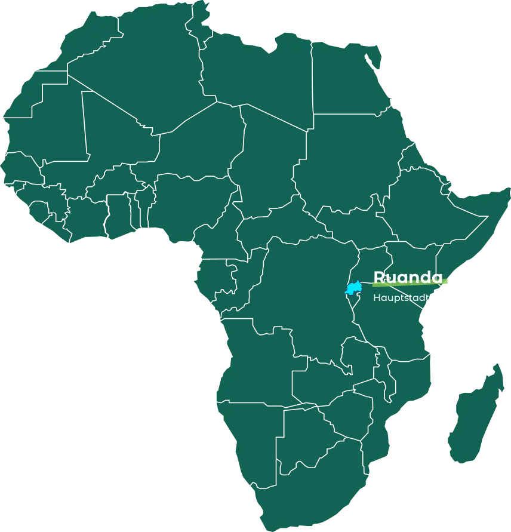

Ruanda – ein Land der
Sub-Sahara mit viel
Potential
kurze Einführung über 4-5 Zeilen At vero eos et accusam et justo duo
dolores
et ea rebum. Stet clita kasd gubergren, no sea takimata sanctus est
L vero
eos et accusam et justo duo dolores et ea rebum. Stet clita kasd
gubergren,
no sea takimata sanctus est L
Ein stetig wachsender Markt und Talentpool
- durchschnittliches jährliches BIP-Wachstum von 7,2 Prozent (2021)
- Einwohnerzahl: 13,46 Millionen (2021) prognostizierte Wachstumrate von 1,4 % pro Jahr bis 2050
- ~70% der Einwohner*innen sind unter 30 Jahre
- durchschnittliches jährliches BIP-Wachstum von 7,2 Prozent (2021)
- durchschnittliches jährliches BIP-Wachstum von 7,2 Prozent (2021)
